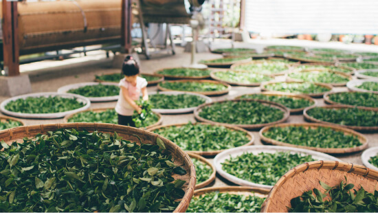

bancha.vn
Trà già bancha 3 năm
bancha.vn
Trà già bancha 3 năm
Trà Bancha là một loại trà dưỡng sinh được làm từ những chiếc lá lâu năm của cây chè và do đó chúng có giá trị về mặt sức khỏe hơn rất nhiều so với các loại trà khác.
Trà Bancha có hàm lượng caffein thấp hơn nhiều so với trà thường và sở hữu hương vị độc đáo, riêng biệt. Trong bài viết này, chúng ta sẽ tìm hiểu trà Bancha là gì, hương vị của loại trà này như thế nào và cách pha trà Bancha.
Công dụng: Trà Bancha mang lại vô số lợi ích cho cơ thể, chẳng hạn như thúc đẩy tiêu hóa và giải độc các chất có hại như rượu, thức ăn, độc tố và hóa chất. Hỗ trợ lọc máu, giảm mệt mỏi và căng thẳng đồng thời kích thích tiêu hóa và thúc đẩy tính kiềm.
Ngoài ra, tính chất khử trùng của nó làm cho nó trở thành một giải pháp có giá trị để làm sạch vết thương, làm sạch da mặt và điều trị mụn trứng cá. Trà Bancha thậm chí có thể dùng như một loại nước súc miệng và dung dịch vệ sinh phụ nữ hiệu quả.
Lá cây trà Bancha được thu hái vào cuối mùa thu, khi những chiếc lá đã lớn và có màu xanh đậm. Điều này làm cho trà Bancha có hàm lượng tannin (hợp chất tự nhiên trong trà) thấp hơn so với các loại trà khác. Điều này cũng tạo ra hương vị êm dịu, nhẹ nhàng và ít đắng.
Quá trình chế biến phức tạp của trà Bancha bao gồm một loạt các kỹ thuật, bao gồm nấu, cuộn và sấy khô, hoạt động hài hòa để nắm bắt được bản chất vốn có của lá cây trà lâu năm. Quá trình tỉ mỉ này bảo tồn các thuộc tính đặc biệt của trà đồng thời tăng cường hương vị tự nhiên của nó.
Trà Bancha là một loại trà truyền thống đặc biệt của Nhật Bản, được làm từ lá cây trà thu hoạch sau vụ mùa chính vào cuối mùa thu. Từ Bancha trong tiếng Nhật bao gồm hai ký tự kanji “ban” 番 và cha “茶”. Ký tự “cha” có nghĩa là trà, còn ký tự “ban” ám chỉ về “thứ tự phía sau”. Như vậy “Bancha” có nghĩa là “trà hái sau”.
Đúng như tên gọi, trà Bancha được thu hoạch muộn hơn trong năm, sau shincha và Sencha. Đây sẽ là một cách hay để phân biệt Sencha với Bancha vì Bancha được làm từ vụ thu hoạch thứ hai, thứ ba hoặc thậm chí thứ tư và nó được làm bằng những lá già hơn của cây chè.
Theo phương pháp dưỡng sinh Oshawa, lá Trà bancha (từ 3 năm trở lên) rất đặc biệt và lợi ích sức khỏe vượt trội hơn so với các loại trà khác. Thời gian sinh trưởng dài của nó dẫn đến hàm lượng caffein thấp hơn, nhưng nó bù lại bằng nồng độ khoáng chất cao hơn và hàm lượng tanin thấp.
Hương vị nhẹ nhàng và hàm lượng caffein thấp của Trà Bancha mang đến cơ hội thưởng thức loại trà này mà không lo bị mất ngủ, không giống như các loại trà khác có thể để lại dư vị đắng hoặc chát.